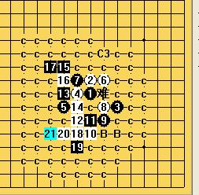

再谈新月
#1 再谈新月 作者：茗弈小刀 发表时间：2009-5-26 22:19:02
大家爱好五子棋的朋友都知道了，新月局是黑大优。最近我的徒弟-少欺负我又再拆新月2打。由于我平日社团事务比较繁忙，最近一年多基本没拆什么棋，依稀记得新月2打很早就胜了的，我这徒弟棋力也是很强的，比较纳闷。她问我：“师傅，这哪个11能必胜？”（图一）
我打开谱，谱上说明有几种杀法，但细看却发现后边根本没杀出来。我决定重新拆这个棋。我先选择的这一路杀：（图二）
但到最后仍有几个点杀不干净。于是我换了11，谁知道一下遇到这个强12，顿时难住了
（图三）
心急如焚之下，决定再换一个11.关键是要地毯了才叫必呀，而地毯是比较繁琐的，坚持吧！一步一步朝胜利接近了，又杀掉了这个点！（图四）
松了口气。谁知道又犯难了：遇到这个18，20，（图五）
再拆下去，出现这个22.我的心一下跌到了谷底（图六）

辛苦了一周吧，结果仍没杀出来，我差点放弃了。但是，我不能放弃！我有一个棋社，这么多徒弟，我有责任呀。愁苦的坐在椅子上，关键是哪个11能杀，知道了就有个方向了呀。突然脑子里灵光一闪：何不请教下李（尤达）老师呢？这些棋他老人家可是研究很深入的呀。于是论坛里请教了李老师，老师肯定的告诉我；这个11必胜！
我阴翳的心里又看到了阳光，看到了希望。那么 一个12一个12的解决吧，虽然仍漫长但只要有方向有目标，再大的努力也是值得的。在有的棋一时看不到的时候，谢谢小眼兄帮我算，让我少走些弯路。在妹妹撒蓉儿，
我亲爱的朋友，我想告诉大家的是，通过劳动得来的收获，那份心情是最美丽的。您--也试试吧！
这个局大家哪里杀不出来跟图问，我会一一解答。
［ 逆刃 于 2009-5-27 16:20:12 时奖励此帖[金币加 20 威望加1］
［ 逆刃 于 2009-5-27 16:22:33 时花20金币送鲜花一朵］
［ 撒蓉儿 于 2009-5-27 17:09:05 时花20金币送鲜花一朵］
［ 飞哥 于 2009-5-27 22:44:14 时花20金币送鲜花一朵］
［ 静待花开 于 2009-5-30 17:55:07 时花20金币送鲜花一朵］
［ 静待花开 于 2009-5-30 17:55:29 时花20金币送鲜花一朵］
［ 静待花开 于 2009-5-30 17:55:37 时花20金币送鲜花一朵］
［ 梦醉南天 于 2009-6-6 23:09:05 时花20金币送鲜花一朵］
［ 可乐可口 于 2009-6-19 21:39:24 时花20金币送鲜花一朵］
［ 冰霜 于 2011-10-21 9:18:55 时花20金币送鲜花一朵］
［ 风云一剑林 于 2011-10-21 11:45:19 时花20金币送鲜花一朵］
［ 海湾浪琴 于 2011-10-25 17:14:58 时花20金币送鲜花一朵］
［ 海湾浪琴 于 2011-10-25 17:15:08 时花20金币送鲜花一朵］
#2 Re:再谈新月 作者：不知 发表时间：2009-5-26 22:21:23
 JJ什么时候发个地毯上来共享一下..
JJ什么时候发个地毯上来共享一下..
#3 Re:再谈新月 作者：我爱你遥遥 发表时间：2009-5-26 22:33:08
貌似看不到图片#4 Re:再谈新月 作者：山寨手机 发表时间：2009-5-26 22:36:34
楼主的图没发上来#5 Re:再谈新月 作者：茗弈小刀 发表时间：2009-5-26 22:40:44
能看到呀，刷新下吧，或重进下网站。#6 Re:再谈新月 作者：nara 发表时间：2009-5-26 22:53:41
还是看不见图片，图片来自QQ空间！
#7 Re:再谈新月 作者：茗弈小刀 发表时间：2009-5-26 23:02:56
现在能看到了吧？#8 Re:再谈新月 作者：nara 发表时间：2009-5-26 23:11:54
现在可以了！呵呵！
#9 Re:再谈新月 作者：高星 发表时间：2009-5-27 8:40:48
 姐姐好敬业啊
姐姐好敬业啊
#10 Re:再谈新月 作者：五子痴 发表时间：2009-5-27 10:58:27
这个10有两种杀法#11 Re:再谈新月 作者：下棋思思 发表时间：2009-5-27 12:21:07
学习了，我记性差，就记前面几个分析的图的一部分吧，至于必了，知道有这么回事吧。
10说的两种？给个简单的图啊，也好有个方向。
#12 Re:再谈新月 作者：茗弈真实的谎言 发表时间：2009-5-27 20:14:52
我亲爱的朋友，我想告诉大家的是，通过劳动得来的收获，那份心情是最美丽的。您--也试试吧！
这个局大家哪里杀不出来跟图问，我会一一解答。
小刀老师这2句话寓意很深呀！
#13 Re:再谈新月 作者：飞哥 发表时间：2009-5-27 22:52:53
刀刀我来了
#14 Re:再谈新月 作者：wd1988 发表时间：2009-5-28 11:34:57
这话的意思就是：不要问我要谱，自己做去。。。#15 Re:再谈新月 作者：茗弈小刀 发表时间：2009-5-28 11:44:29
是啊，这是我觉得论坛出现的很严肃的问题，有很多老师或朋友发了谱，不但没得到某些人的尊重或一声谢谢，甚至挑些毛病，比如你这个谱不好，或是谁的谁的谱，甚至有的说怎么强弱都没标呢？所以我个人以为，建议大家自己多动手，某个局杀不出来，相信大家都会齐心帮助的。［ 逆刃 于 2011-10-22 12:56:09 时花20金币送鲜花一朵］
#16 Re:再谈新月 作者：自来水 发表时间：2009-5-28 21:41:30
LS兼LZ，要是早点问也不至于纠结一个星期了……
发谱就是拿出来分享的，我就没事发谱（虽然没什么水准），敢发就不怕人家挑剔……找茬的人总是有的
嗯
#17 Re:再谈新月 作者：棋元道 发表时间：2011-10-17 23:18:59
新月2打前10手唯一了吗？
#18 Re:再谈新月 作者：冰霜 发表时间：2011-10-21 8:58:44
佩服！！！小刀师父是五子棋的精彩！#19 Re:再谈新月 作者：风云一剑林 发表时间：2011-10-21 11:47:26
师傅挺威武!#20 Re:再谈新月 作者：裁决兔子 发表时间：2011-10-22 12:19:04
就此帖，先向刀刀老师致敬，感谢对五子棋研究做的贡献，然后就此帖，讨论新月二打唯一防的问题
请教下12冲四是唯一防？？
#21 Re:再谈新月 作者：丁香花开 发表时间：2011-11-26 18:27:38
小刀师傅 /亲亲
#22 Re:再谈新月 作者：茗弈宽容 发表时间：2011-11-30 15:19:15
20楼裁决兔子朋友，才看到贴不好意思，12一般常见这2种下法：